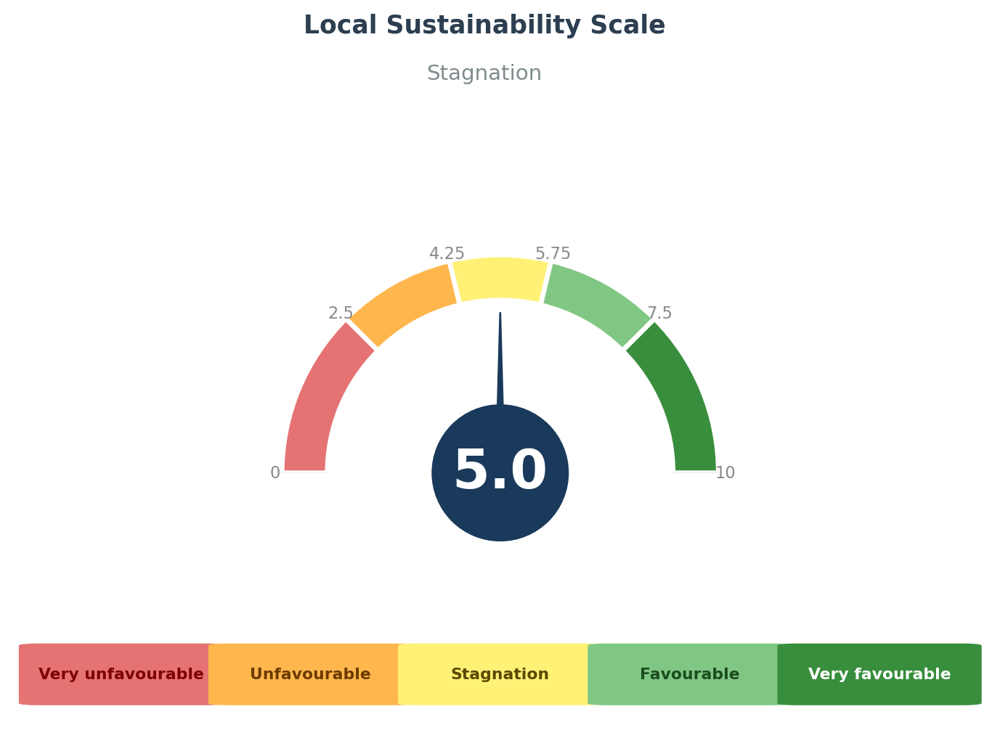

Coding and SWOT analysis with Synesis for community diagnoses
This document shows how to use Synesis to structure a Participatory Socio-environmental Diagnosis (PSD) — a process that combines technical data and community perceptions to assess the sustainability of a place. The proposed template integrates qualitative coding, SWOT analysis and dimensions of sustainability in a single compilable structure.
Fictitious data
All examples shown here are fictitious, created to illustrate the use of Synesis. The community, the sources and the factors were invented for teaching purposes.
1 Overview of the Method
There are several ways to carry out a participatory diagnosis. Our example uses the following method:
Technical reading: gathering reference data about the community (reports, environmental studies, census data)
Community reading: participatory workshops where residents identify positive and negative factors in their reality
Itemization: extracting units of analysis — passages containing one main idea
Coding: assigning themes/factors to each item, using descriptive or in vivo coding
SWOT categorization: each factor is classified as Strength, Weakness, Opportunity or Threat
Dimensions of sustainability: each factor is associated with a dimension (environmental, sociocultural, economic, governance)
Significance scoring: assigning importance to enable quantitative comparisons
The Synesis template formalizes all these steps in a structure the compiler can validate.
Analytical trail and audit trail
A rigorous participatory diagnosis needs two traceable trails:
Analytical trail: the record of the researcher’s interpretive decisions — why this passage was coded with this factor, why it received this SWOT classification. In the template the summary field (MEMO) plays this role: each item carries the researcher’s justification next to the data.
Audit trail: the traceability of each interpretation back to the raw data behind it. The quote field (QUOTATION) ties each coding to the exact excerpt of the source, and the @source reference identifies where the excerpt came from.
Together these trails let any reader walk the reverse path — from the aggregate result (sustainability scale) to the resident’s original words or the passage of the technical report that supports it.
2 The Template (.synt file)
The template organizes the diagnosis into three blocks: sources, items and ontology.
2.1 Sources: who said it
SOURCEFIELDSREQUIRED ref_typeENDSOURCEFIELDSFIELD ref_type TYPEENUMERATEDSCOPESOURCEDESCRIPTION Type of reference usedVALUESpri: Primary reference, interviewssec: Secondary reference, blogs, newspapers, magazines, podcastsref: Scientific articles, official documentsENDVALUESENDFIELD
Distinguishing pri, sec and ref makes it possible to filter results by type of evidence. Data from community workshops (pri) can be analyzed separately from technical reports (ref).
2.2 Items: what was said and how it is interpreted
ITEMFIELDSREQUIREDquote, summary, factor, swot, importanceENDITEMFIELDSFIELDquoteTYPE QUOTATIONSCOPEITEMDESCRIPTION Textual excerpt from the bibliographic sourceENDFIELDFIELD summary TYPEMEMOSCOPEITEMDESCRIPTION Analytical memo explaining the interpretationENDFIELDFIELD factor TYPECODESCOPEITEMDESCRIPTION Thematic keywordENDFIELDFIELD swot TYPEENUMERATEDSCOPEITEMDESCRIPTION Elements of the SWOT matrixVALUESst: Strength (internal perspective)we: Weakness (internal perspective)op: Opportunity (external perspective)th: Threat (external perspective)ENDVALUESENDFIELDFIELD importance TYPESCALESCOPEITEMFORMAT[0..2]DESCRIPTION Importance of the factor (0=none or low, 1=moderate, 2=high)ENDFIELD
Each item combines five field types: QUOTATION (raw data), MEMO (interpretation), CODE (thematic factor linked to the ontology), ENUMERATED (SWOT classification) and SCALE (significance).
Integer scoring
A SCALE declared with integer bounds, such as [0..2], accepts only integer values. That is why importance uses 0, 1 and 2.
2.3 Ontology: what each factor means
ONTOLOGYFIELDSREQUIRED description, sustainability_dimensionENDONTOLOGYFIELDSFIELD description TYPETEXTSCOPEONTOLOGYDESCRIPTION Description of the factorENDFIELDFIELD sustainability_dimension TYPEENUMERATEDSCOPEONTOLOGYDESCRIPTION Dimensions of sustainabilityVALUESenvironmental: Ecosystems, natural resources, fauna, florasociocultural: Quality of life, cultural values, intergenerational continuityeconomic: Investment, trade, employabilitygovernance: Infrastructure, legal sustainability, social justiceENDVALUESENDFIELD
Composing types
This template uses 5 field types in a single project: QUOTATION, MEMO, CODE, ENUMERATED and SCALE. Together they express the complete pipeline of our diagnosis: extraction → interpretation → coding → classification → scoring.
3 Example Sources
The following examples use a fictitious community — Vila dos Coqueiros, a coastal fishing village in Brazil.
Each item extracts an excerpt, interprets it and classifies it. Below is one example for each SWOT category.
4.1 Strength
ITEM@workshop_coqueiros2026quote:"Small-scale fishing here supports more than half of the families. My grandfather already fished in this same spot, so did my father."summary: Artisanal fishing is the community's main economic activity, with intergenerational continuity that strengthens both the local economy and cultural identity.factor: Artisanal_Fishingswot: stimportance: 2ENDITEM
Positive internal factor: artisanal fishing supports families and carries cultural meaning. High importance (2).
4.2 Weakness
ITEM@workshop_coqueiros2026quote:"People throw rubbish into the mangrove because there is no collection. The city hall doesn't come here."summary: Lack of waste collection leads to improper disposal in the mangrove ecosystem, causing a direct environmental impact.factor: Waste_Disposalswot: weimportance: 1ENDITEM
Negative internal factor: a local practice of improper disposal, aggravated by the absence of a public service. Moderate importance (1).
4.3 Opportunity
ITEM@coast_news2026quote:"A federal community-based tourism programme has selected five coastal villages to receive training and infrastructure."summary: A government programme may diversify the local economy and give value to the community's cultural assets.factor: Community_Tourismswot: opimportance: 2ENDITEM
Positive external factor: an opportunity for economic diversification coming from public policy. High importance (2).
4.4 Threat
ITEM@environmental_report2025quote:"Monitoring identified an accelerated rate of siltation at the mouth of the Coqueiros river, with a 30% reduction in the depth of the main channel over the last five years."summary: Siltation compromises navigability and fish stocks, threatening the community's main economic activity.factor: Siltationswot: thimportance: 2ENDITEM
Negative external factor: an environmental process independent of the community’s actions that directly affects its sustainability. High importance (2).
4.5 More Items
The factors Cultural_Heritage and Basic_Sanitation, present in the ontology, also appear as items:
ITEM@workshop_coqueiros2026quote:"The Saint Peter festival and the manioc flour gatherings are an old tradition. Everyone takes part, even those who left the village come back for it."summary: Traditional festivities and collective production practices reinforce the community's social cohesion and cultural identity.factor: Cultural_Heritageswot: stimportance: 1ENDITEMITEM@workshop_coqueiros2026quote:"There is no sewage network. Each one handles it their own way --- cesspit, ditch, or straight into the river."summary: Lack of sewage services produces improvised solutions with a risk of water contamination.factor: Basic_Sanitationswot: weimportance: 2ENDITEM
5 Ontology: Factors and Their Dimensions
Each factor mentioned in the items should have an ontology entry, with a description and a sustainability dimension. The compiler warns when a factor is not defined.
ONTOLOGY Artisanal_Fishingdescription: Traditional small-scale fishing, practised with techniques passed down between generations.sustainability_dimension: economicENDONTOLOGYONTOLOGY Waste_Disposaldescription: Improper disposal of solid waste in natural areas, resulting from the lack of public collection and from local handling practices.sustainability_dimension: environmentalENDONTOLOGYONTOLOGY Community_Tourismdescription: Tourism model managed by the community itself, giving value to local cultural and natural assets.sustainability_dimension: economicENDONTOLOGYONTOLOGY Siltationdescription: Build-up of sediment in water bodies that reduces depth and compromises navigation and aquatic biodiversity.sustainability_dimension: environmentalENDONTOLOGYONTOLOGY Basic_Sanitationdescription: Set of water supply, sewage and urban drainage services provided by public authorities.sustainability_dimension: governanceENDONTOLOGYONTOLOGY Cultural_Heritagedescription: Cultural practices, knowledge and expressions passed down between generations in the community.sustainability_dimension: socioculturalENDONTOLOGY
One dimension per concept
Each factor receives one main dimension. Artisanal_Fishing is classified as economic (its primary function is to generate income), although it also has sociocultural relevance. The chosen dimension reflects the predominant aspect in the context of the diagnosis.
Sustainable Development Goals
Besides dimensions of sustainability, an SDG category can be created to identify how far the Sustainable Development Goals are being met in the community assessed.
6 Analysis and Export
Once compiled and exported, the data allow several analyses:
Filter by SWOT: how many strengths versus weaknesses? Does the community have more opportunities or threats?
Group by dimension: which dimension of sustainability concentrates the most weaknesses?
Compare communities: applying the same template to several villages makes the results directly comparable
Export: JSON for visualizations, Excel or CSV for SWOT matrices (for instance in Jupyter Lab) and, with synesis-graph, a graph in Neo4j or ArcadeDB to explore factors, sources and dimensions
The compilable structure makes it possible to detect problems before the analysis: missing required fields and disallowed values are errors; factors without an ontology definition are warnings (treated as errors with --strict).
6.1 Local Sustainability Scale
After exporting the data, the importance points can be combined into a sustainability scale from 0 to 10, where 0 is very unfavourable and 10 very favourable. The formula normalizes the ratio between positive and negative factors:
The result 5.0 places Vila dos Coqueiros in the Stagnation band — positive and negative factors balance out.
6.1.2 Scale Classes
Local sustainability scale
Class
From
To
Very unfavourable
0.00
2.50
Unfavourable
2.51
4.25
Stagnation
4.26
5.75
Favourable
5.76
7.50
Very favourable
7.51
10.00
Limitations of the formula
The formula requires at least one factor to have been identified (\(S + O + W + T > 0\)), otherwise there is a division by zero. In addition, the result is sensitive to the number of factors: a community with many scored factors tends to converge to 5, while communities with few factors may swing more. For comparisons between communities, it is important to keep consistent coding criteria.
7 Vila dos Coqueiros Metrics
The visualizations below summarize the data presented on this page — all taken directly from the example items, sources and ontology of Vila dos Coqueiros.
Show code
import plotly.graph_objects as goimport plotly.express as pximport pandas as pdfrom plotly.subplots import make_subplots# Data taken from the examples on this pagefactors = pd.DataFrame([ {"factor": "Artisanal Fishing", "swot": "Strength", "dimension": "Economic", "importance": 2}, {"factor": "Cultural Heritage", "swot": "Strength", "dimension": "Sociocultural", "importance": 1}, {"factor": "Community Tourism", "swot": "Opportunity", "dimension": "Economic", "importance": 2}, {"factor": "Waste Disposal", "swot": "Weakness", "dimension": "Environmental", "importance": 1}, {"factor": "Basic Sanitation", "swot": "Weakness", "dimension": "Governance", "importance": 2}, {"factor": "Siltation", "swot": "Threat", "dimension": "Environmental", "importance": 2},])sources = pd.DataFrame([ {"type": "Primary (workshop)", "code": "pri", "count": 1}, {"type": "Secondary (newspaper)","code": "sec", "count": 1}, {"type": "Reference (report)", "code": "ref", "count": 1},])S = factors[factors["swot"] =="Strength"]["importance"].sum()O = factors[factors["swot"] =="Opportunity"]["importance"].sum()W = factors[factors["swot"] =="Weakness"]["importance"].sum()T = factors[factors["swot"] =="Threat"]["importance"].sum()scale = ((S + O) - (W + T)) / ((S + O) + (W + T)) *5+5def scale_class(v):if v <=2.50: return"Very unfavourable"if v <=4.25: return"Unfavourable"if v <=5.75: return"Stagnation"if v <=7.50: return"Favourable"return"Very favourable"current_class = scale_class(scale)
7.1 Sustainability Scale
Show code
import matplotlib.pyplot as pltimport matplotlib.patches as mpatchesimport matplotlib.gridspec as gridspecimport numpy as npbands = [ {"label": "Very unfavourable", "start": 0, "end": 2.5, "color": "#E57373", "txt": "#7f0000"}, {"label": "Unfavourable", "start": 2.5, "end": 4.25, "color": "#FFB74D", "txt": "#6d3b00"}, {"label": "Stagnation", "start": 4.25, "end": 5.75, "color": "#FFF176", "txt": "#5a4a00"}, {"label": "Favourable", "start": 5.75, "end": 7.5, "color": "#81C784", "txt": "#1b4d1e"}, {"label": "Very favourable", "start": 7.5, "end": 10, "color": "#388E3C", "txt": "#ffffff"},]def val_to_rad(v):return np.pi - (v /10) * np.pifig = plt.figure(figsize=(9, 6), facecolor="white")gs = gridspec.GridSpec(2, 1, height_ratios=[5, 1], hspace=0.05)# ── Polar axis (gauge) ────────────────────────────────────────────────────────ax = fig.add_subplot(gs[0], projection="polar")ax.set_facecolor("white")for b in bands: theta_start = val_to_rad(b["end"]) width = val_to_rad(b["start"]) - val_to_rad(b["end"]) ax.bar(x=theta_start, width=width, height=0.52, bottom=1.98, color=b["color"], edgecolor="white", linewidth=2.5, align="edge")# Numeric markers at the limitsfor v in [0, 2.5, 4.25, 5.75, 7.5, 10]: ax.annotate(f"{v:g}", xy=(val_to_rad(v), 2.58), ha="center", va="center", fontsize=8.5, color="#888888")# Wedge pointerax.annotate("", xytext=(0, 0), xy=(val_to_rad(scale), 1.88), arrowprops=dict(arrowstyle="wedge,tail_width=0.45", color="#1A3A5C", shrinkA=0))# Central circle with the valueax.annotate(f"{scale:.1f}", xy=(0, 0), xycoords="data", ha="center", va="center", fontsize=28, fontweight="bold", color="white", bbox=dict(boxstyle="circle,pad=0.38", facecolor="#1A3A5C", linewidth=0))ax.set_ylim(0, 3)ax.set_xlim(0, np.pi)ax.set_axis_off()# Title and class above the gaugefig.text(0.5, 0.96, "Local Sustainability Scale", ha="center", va="top", fontsize=13, fontweight="bold", color="#2C3E50")fig.text(0.5, 0.90, current_class, ha="center", va="top", fontsize=11, color="#7F8C8D")# ── Cartesian axis (horizontal legend) ───────────────────────────────────────ax2 = fig.add_subplot(gs[1])ax2.set_facecolor("white")ax2.set_axis_off()n =len(bands)chip_w, chip_h =0.17, 0.55gap = (1.0- n * chip_w) / (n +1)for i, b inenumerate(bands): x = gap + i * (chip_w + gap) rect = mpatches.FancyBboxPatch( (x, 0.2), chip_w, chip_h, boxstyle="round,pad=0.02", facecolor=b["color"], edgecolor="none", transform=ax2.transAxes, clip_on=False, ) ax2.add_patch(rect) ax2.text(x + chip_w /2, 0.2+ chip_h /2, b["label"], ha="center", va="center", fontsize=8.2, fontweight="bold", color=b["txt"], transform=ax2.transAxes)plt.show()

Figure 1: Local sustainability scale of Vila dos Coqueiros (0–10).